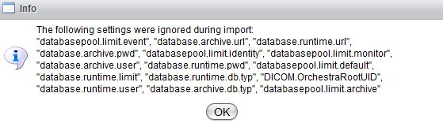

Managing environment settings

Topic content
For changing or analyzing the current environment settings, select "Settings" in the menu and then click on the tab "Environment settings".
Start page of environment settings
If you only want to analyze the settings, use the drop down list with the caption "select a group" to select the setting group you want to look at. All settings will be loaded in the table with the current value and if a description is available, it will also be shown. If a setting is modifiable, you can see a button with a pen for editing the setting. If a parameter is modifiable during the runtime (that means that the changes have an immediate effect and you don't have to restart the system for making it active), you can see this by a tick in the second column. Otherwise, there is a forbidden symbol. This is also explained if you click on the help button.
Roles
Each user has roles. For looking at the environment settings and exporting them, the role Environment Settings Reader is necessary. If a user wants to edit the settings or import some groups, the role Environment Settings Writer is needed. You can assign the roles in the user management panel. If the user does not have the necessary role, the buttons to further functions are not visible or not enabled.
Editing environment settings
If a setting is modifiable, you can edit it by clicking on the pen button. A new dialog opens:
The dialog for editing environment settings
You can see the parameter name and explanation in the first lines, then a explanation of the correct type follows. If the new value does not fit this explained type, the change will not be saved and an error message appears. If the type is String, no explanation is shown. But that does not mean that every value is a correct one, it only means the type is not more specified. If you click on the "save"-button, the change will be stored locally but is not stored in the database. You can make all changes you need and in the end click on "save changes" in the button bar at the top for storing the settings in the database. If you want to undo them, click on "discard changes". The local changes are lost then.
Buttons for saving and discarding local changes
If something is changed, a system event is generated with information about the user that made the changes.
Published system events
Setting state
Depending on what you did, the state of the settings changes:
•Green triangle: The setting is currently active, that means the current value is used in the runtime.
•Red square: The setting was changed and is locally saved, but not stored in the database. The current active value is still in the value column, the new value is in brackets behind it.
•Yellow circle: The setting was changed and the changed value is stored in the database, but the new value is currently not active and needs a start up to become active. The old value is still in the value field, the new one behind it in brackets.
Automatic backup export
If you configured the setting runtime.environment.bakup with a path on the server, on every click on the "save changes"-button an automatic export of the changed groups is made. The export file with the file name settings<timestamp>.xml is stored in the configured folder. This is useful if a change causes issues and you want to restore the old settings.
Changed settings overview
If you want to have a look at all changes that are currently made, click on the changed settings check box.
Use this check box for a list of all changed settings
A list with all locally saved changes and all changes that will be available on the next start up will appear then. You can modify them also right from this page. If a setting is runtime modifiable and was locally saved (so you see it on the page) and then you click on save changes, it will become active. So don't wonder about why it disappears from this page then.
This is the panel that shows (alphabetically sorted) all settings that are currently not active
Import and export functions
Use these buttons for import and export
Export
If you click on export, you can choose all the groups you want to export. The export is made with the current active settings. So if some settings are marked with a yellow circle or a red square, the values in brackets are not exported but the ones before the brackets. In this case, a short warning message opens before the export dialog.
Warning message in case of modified settings Export dialog
After selecting all you want and clicking on "export settings", an xml file is generated and you can download it. It has the file name environment_settings_<node>.xml.
Import
By clicking on import, you are asked to choose a file to upload for importing. Choose the file you want with the right format and information. Then click on "load groups".
Import dialog for selecting the file to import
Loading the groups means checking which groups exist in the selected file. The next dialog then makes it possible to select the groups you want to import.
After the import, you will either see a success message or a error message. In case of the success message, the imported settings will be shown in the table with the correct state (according to the state explanation). If there are some not modifiable or not existing parameters contained in the file, the settings will be ignored and a dialog with all ignored settings will open.
